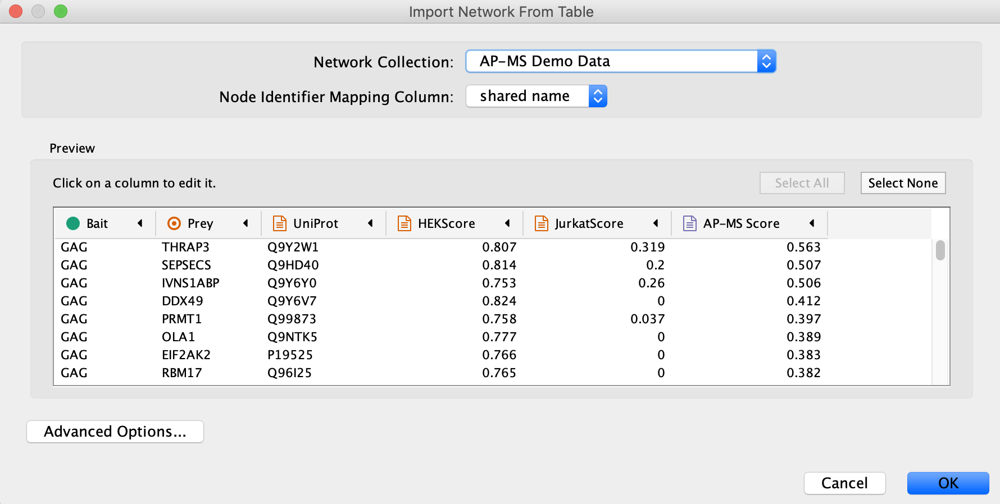
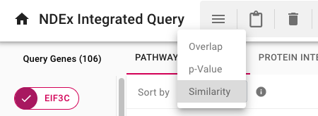

Protein Interaction Network Analysis Using Cytoscape and NDEx
In this tutorial, you will:
- Generate a protein interaction network from tabular interaction data.
- Extend the network with protein interactions from public resources.
- Format the network for effective visualization.
- Open networks from the web in Cytoscape.
- Save networks to NDEx.

Background
The data used for this protocol is from an affinity purification-mass spectrometry experiment which identified interactions between human and HIV proteins by Jäger et al. In this quantitative AP-MS experiment, a relatively small number of HIV bait proteins are used to pull down a larger set of human prey proteins.
Setup
This protocol requires:
- Cytoscape v3.7.2
- cyNDEx-2 v3.0.1 App (or higher)
To install CyNDEx-2
- Launch Cytoscape 3.7.2.
- Use the App Manager to update the cyNDEx-2 App to the latest version available.
Option 1:Create the Interaction Network from Tabular Data
- Load the network via
File → Import → Network from File.... , and select the Example data. - In the
Import Network from Table dialog, select theBait column asSource Node andPrey column asTarget Node . - Designate the
AP-MS Score as anEdge Attribute . - For all other data values, designate them as
Target Node Attribute , by clicking in the column header and selecting the red spreadsheet icon. - Click
OK to import the network.

Option 2: Import the Interaction Network from NDEx
-
Search the AP-MS Demo Data network in NDEx by typing "ap-ms demo data" in the
NDEx Search Box and clicking the search icon .
.
- The cyNDEx Browser window will pop up... Click the
Import button next to the AP-MS Demo Data network, then close the pop up window.

The Interaction Network
Cytoscape will now display the interaction network with a default style and a grid layout (When loading from tabular data as described in Option 1, the layout may be different depending on your Cytoscape settings. Don't worry, this will not matter.)

Add Human PPI to the Network
Now extend the network by adding known protein-protein interactions between the human proteins. This interaction data will be obtained via the
-
Click the
Select tab in theControl Panel - Click the "Plus" sign and add a
Column Filter - Then, use the
Dropdown element to select theUniprot column - Now, select all the genes in the
name column by selecting the top item, then scroll down and hold down Shift and then selecting the last entry. - Click
Ctrl+C (Command+C if using a Mac) to copy. -
Note: there is a minor issue with selection in which all of the columns are highlighted, not just the one that is selected. While confusing, the selection works correctly.
Add Human PPI to the Network
- Open your browser and go to the NDEx website
- Paste the list of gene symbols into the
iQuery text box - Click the search icon to run your query

Add Human PPI to the Network
In the following results screen, select the
- Select the
HumanNet - XN result. - Click the
Cytoscape icon in the top right portion of the screen to load the result in Cytoscape.

Add Human PPI to the Network
The

Preparing to Merge Networks
Before merging our two networks, we should clear the
- Select again the AP-MS network
- Click the
Select tab in theControl Panel - Click the "X" sign next to the
Column Filter to remove it
Merge Networks
Now we are ready to incorprate the human protein interactions from the IQuery result: we are going to merge the AP-MS network with the HumanNet XN query result, matching nodes using the official gene symbols stored in the
- Go to
Tools → Merge → Networks... - In the
Available Networks list, select both networks and click the right arrow to add them to the list ofNetworks to Merge - Expand the
Advanced Options interface - In the
Matching Columns field, selectname for the AP-MS network andname for the IQuery result network if they are not already pre-set - Click the
Merge button

The Merged Network
When the merged network first loads, it will have the Cytoscape default style (inherited from the AP-MS network) and the Cytoscape default layout (Prefuse Force Directed Layout). All nodes look the same and this makes it difficult to interpret.

Visual Styling Based on Continuous Numeric Data
Let's now improve the visualization of our merged network by creating continuous mappings to style nodes and edges based on the data associated with their properties.
Visual Styling Based on Continuous Numeric Data
To begin, we will color the nodes based on their
- In the
Style tab of theControl Panel , create a new style named AP-MS Jurkat Score. - Create a continuous mapping for the node
Fill Color using theJurkatScore column, then select a purple gradient from theColorBrewer palettes. - Switch the deafult node
Fill Color toyellow to highlight the HIV proteins. - Create a passthrough mapping for node
Label using thename column. - Now switch to the
Edge tab and create a continuous mapping for edgeWidth using theAP-MS Score column and set the width values to a range from 1 to 10.
Visual Styling Based on Discrete Data
Let's now further enhance our network's visualization by applying a discrete mapping to better differentiate its edges.
Visual Styling Based on Discrete Data
We will now create a discrete mapping and color the edges to distinguish HIV-Human interactions from Human-Human interactions:
- Create a
Discrete mapping for the edgeStroke Color (unselected) property using data from theinteraction column - Choose a GREEN color for all interactions of type interacts with
- Then change the default property color to RED
The Improved Visualization of the Network
The visualization of the network now highlights the AP-MS experimental data (GREEN edges), as well as additional known interactions from HumanNet (RED edges), with a PURPLE gradient node color indicating the Jurkat Score for our human query genes.

Inspecting Visualized Interactions
Zooming in on the network, specifically the POL and PR HIV nodes, we can see a set of interactions found in the original paper by Jäger et al, which represent binding of POL and PR with the translational initiation complex EIF3.

Pathway Enrichment with NDEx IQuery
IQuery lets you find pathways relevant to the host (human) proteins. Go back to the IQuery web page and select the

Pathway Enrichment with NDEx IQuery
There are three ways to sort the enrichment query results, selected by the
- By default, pathways are sorted by the
Similarity method - Use the sorting dropdown menu to choose the
Overlap orp-Value methods and the order of the results will change - Click on the
Info Icon next to the sorting dropdown menu to see the documentation for each sorting method. - Each enriched pathway shows its 3 scores and the one currently used for sorting is shown in bold


Open in Cytoscape from IQuery
- Select the 5th result GO:0006413 (translational initiation), then click the Cytoscape icon
 to open the network in Cytoscape as you already did earlier on.
to open the network in Cytoscape as you already did earlier on. - IQuery has added a column called
querynode to nodes in the network to indicate that these are the proteins in the network that match your query. You can use that information to highlight those nodes. - Replace the existing
Discrete mapping for nodeFill Color to instead use thequerynode column - Choose a BRIGHT GREEN for the case where querynode is
true to distinguish the cluster of EIF3 family proteins that are in common between the original AP-MS network (human prey proteins) and this GO:0006413 (translational initiation) pathway.

Save to NDEx from Cytoscape
From Cytoscape, you can easily save the modified pathway network directly to your NDEx account.
- To do so, select the GO:0006413 (translational initiation) network in the
Network Tab of the left hand panel. -
Click the
 button in the top tool bar, then choose
button in the top tool bar, then choose Export Network to NDEx - The
NDEx Save Dialog will be displayed, but theExport Network to NDEx Button in the lower right corner will be deactivated (red oval) because Cytoscape is not yet signed in to an NDEx account. - Click on the account manager box in the upper right hand corner and choose
Add new profile... - Enter your NDEx account name and password, then click the
Sign In button. TheExport Network to NDEx button will now be enabled allowing you to complete the save operation.

Save to NDEx from Cytoscape
- Now visit the NDEx website at www.ndexbio.org and log in to your account
- In your account page, you will see the GO:0006413 (translational initiation) network that you just exported from Cytoscape at the top of the list.
- From your NDEx account page, you can easily:
Share networks with colleagues- Perform different types of
Neighborhood Query Edit network attributesRequest a DOI